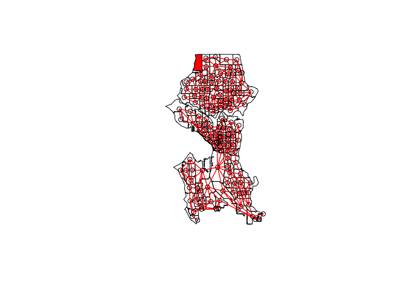
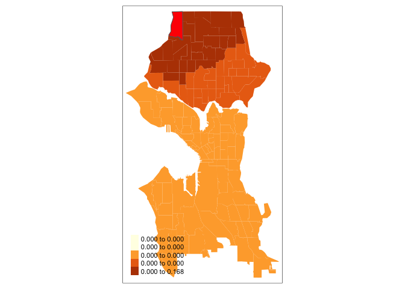

Lab 7: Spatial Regression II
CRD 298 - Spatial Methods in Community Research
Professor Noli Brazil
February 20, 2019
This lab guide builds on the spatial regression concepts, methods and R commands we covered in Lab 6. We’ll expand on last week’s methods in the following ways
- Interpret the coefficients of a spatial lag regression model
- Run models that capture spatial dependence in the independent variables
- Other methods for selecting the appropriate model
To help us accomplish these learning objectives, we will use the same data from last week’s lab to examine the association between neighborhood characteristics and violent crime rates in the City of Seattle, WA.
Load necessary packages
Load in the following packages, all of which we’ve covered in previous labs
library(sf)
library(tidyverse)
library(sp)
library(tmap)
library(spdep)
library(car)
library(knitr)Bring in data
We will be using the shapefile seattle_census_tracts_2010.shp. This file contains violent crime counts and rates between 2014 and 2017 by census tracts. It also contains demographic and socioeconomic data from the 2012-16 American Community Survey. The record layout for the shapefile’s attribute table is located here.
I zipped up the files associated with the shapefile onto Github. Download the file, unzip it, and bring it into R using the following code.
setwd("insert your pathway here")
download.file(url = "https://raw.githubusercontent.com/crd230/data/master/seattle_census_tracts_2010.zip", destfile = "seattle_census_tracts_2010.zip")
unzip(zipfile = "seattle_census_tracts_2010.zip")
sea.tracts <- st_read("seattle_census_tracts_2010.shp")
sea.tracts.df <- sea.tracts
st_geometry(sea.tracts.df) <- NULLIntepreting coefficients
We’re going to examine the association between structural neighborhood characteristics and violent crime rates in the City of Seattle using a spatial lag model (SLM). Like we did last lab, create the concentrated disadvantage and immigrant concentration indices
sea.tracts.std <-sea.tracts.df %>%
select(GEOID10, ppov, unemp, pnhblack, pund18, pwelfare, pfb, phisp) %>%
gather(variable, value, -c(GEOID10)) %>%
group_by(variable) %>%
mutate(mean = mean(value), sd = sd(value), z = (value-mean)/sd) %>%
select(-(c(value, mean, sd))) %>%
spread(variable, z) %>%
mutate(concd = (ppov+unemp+pnhblack+pund18+pwelfare)/3, immc = (pfb+phisp)/2) %>%
select(GEOID10, concd, immc)
sea.tracts <- left_join(sea.tracts, sea.tracts.std, by = "GEOID10")
#create sp version
sea.tracts.sp <- as(sea.tracts, "Spatial")Let’s create a Queen contiguity, row-standardized spatial weights matrix using the functions poly2nb() and nb2listw().
seab<-poly2nb(sea.tracts.sp, queen=T)
seaw<-nb2listw(seab, style="W", zero.policy = TRUE)Use the lagsarlm() command to fit a spatial lag model
fit.lag<-lagsarlm(lvcmrt1417 ~ concd + mob + pocc + immc + popd + div +pnhblack,
data = sea.tracts, listw = seaw) The interpretation of the regression effects β for spatial lag models is complicated. In OLS, the β coefficient represents the change in y associated with a one-unit increase in x. In a spatial lag model, however, a unit change in a covariate cascades throughout the system. Each observation will have a direct effect of its covariates on the outcome, but it will also have feedback and indirect effects from its neighbors. Note that Spatial Error models do not have this issue.
One way to understand the cascading effects embedded in a lag model is to ask a question like: What would happen to the violent crime rate in Seattle if residential mobility doubled in census tract 500? We can answer this question by modifying the data and then examining how the changes affect the predicted values.
First, copy the spatial data frame so we don’t mess up the original
sea.tracts.new <- sea.tracts
sea.tracts.newYou’ll see that residential mobility in tract 000500 is 0.0487336. The predicted values of violent crime rates using this value of residential mobility in tract 000500 can be obtained through the predict() function
orig.pred <- as.data.frame(predict(fit.lag, pred.type = "TC", listw=seaw, zero.policy = TRUE))The argument pred.type = "TC" specifies how the prediction is calculated, in this case were doing an in-sample prediction (predicting crime rates for the tracts used to estimate the model) that incorporates the spatial trend captured by the spatial lag (TC stands for “trend corrected”). The purpose of this specific exercise is not to explore the various ways to predict values from a spatial regression model. If you are curious about the different ways you can estimate predictions from spatial models, type in ? predict.sarlm and read this article.
Let’s double tract 500’s residential mobility from 0.0487336 to 0.0974672.
sea.tracts.new<-mutate(sea.tracts.new, mob = ifelse(TRACTCE10 == "000500", 0.0974672, mob))and then get predicted values using this new residential mobility rate, plugging in sea.tracts.new into the newdata = argument.
new.pred <- as.data.frame(predict(fit.lag, pred.type = "TC",
newdata=sea.tracts.new , listw=seaw, zero.policy = TRUE))The difference between the new and original predicted values shows the impact of doubling residential mobility in tract 500
sea.tracts.new <- mutate(sea.tracts.new, effect = new.pred$fit-orig.pred$fit)Without any spatial dependency, increasing residential mobility in tract 500 will only have an effect on tract 500’s violent crime rate. However, because we’ve incorporated spatial dependency in the dependent variable, the increase will impact neighboring crime rates, which will then impact more distal communities. We can see this dependency by plotting the neighbor connections
plot(sea.tracts.sp)
plot(seab, coords=coordinates(sea.tracts.sp), col = 2, add=T)
plot(sea.tracts.sp[sea.tracts.sp$TRACTCE10 == "000500" ,], col="red", add=T)
And how did increasing the mobility rate cascade throughout Seattle? Plot the difference between new and original predicted crime rate values (the variable effect we created above)
sea.tracts.new.500 <- filter(sea.tracts.new, TRACTCE10 == "000500")
tm_shape(sea.tracts.new) + tm_polygons(col = "effect", style = "quantile",
border.alpha = 0, title = "") +
tm_shape(sea.tracts.new.500) + tm_polygons(col = "red") + tm_layout(legend.format = list(digits = 3))
We find that increasing rates in tract 500 has effects on its immediate neighbors, but we find the effects cascade outwards because these neighbors are connected to distal tracts. Note that the effects will not go beyond the body of water separating the north and south sections of the city because we established a Queen contiguity neighbor definition, which means neighborhoods will not connect across the river because they are not sharing a border or vertex.
Cool, right? Ok, maybe not that thrilling, but the purpose of the above exercise is to show how changing the value of a covariate in one tract has a cascading effect on other tracts. The example was for just one tract, but we are interested in estimating the average effect. We can get estimates of the average direct and indirect effects of covariates in R using the command impacts() in the spdep package.
impacts(fit.lag, listw = seaw)## Impact measures (lag, exact):
## Direct Indirect Total
## concd -0.0490823073 -0.0519153688 -0.100997676
## mob 3.4413346293 3.6399706174 7.081305247
## pocc 0.4625957059 0.4892970195 0.951892725
## immc 0.1838696337 0.1944827040 0.378352338
## popd -0.0007190204 -0.0007605228 -0.001479543
## div 0.2072590825 0.2192222065 0.426481289
## pnhblack 0.9148099770 0.9676133813 1.882423358The coefficients we get from summary(fit.lag) gives us direct effect (a) in Figure 1 in this week’s handout. The direct effects shown from the impacts() output shows (a) + (b). The indirect effect is (c).
You’ll notice that we don’t have any p-values attached to these estimates. To do this, we can run a Monte Carlo simulation by specifying the number of simulations in the R = argument. Let’s save this simulation in an object we’ll call imp1
imp1 <- impacts(fit.lag, listw = seaw, R = 999)We can then use the summary() function to get a succinct presentation of results. The zstats = TRUE option gives you pvalues and the short = TRUE argument spits out a concise summary of results.
summary(imp1, zstats=TRUE, short = TRUE)## Impact measures (lag, exact):
## Direct Indirect Total
## concd -0.0490823073 -0.0519153688 -0.100997676
## mob 3.4413346293 3.6399706174 7.081305247
## pocc 0.4625957059 0.4892970195 0.951892725
## immc 0.1838696337 0.1944827040 0.378352338
## popd -0.0007190204 -0.0007605228 -0.001479543
## div 0.2072590825 0.2192222065 0.426481289
## pnhblack 0.9148099770 0.9676133813 1.882423358
## ========================================================
## Simulation results (asymptotic variance matrix):
## ========================================================
## Simulated z-values:
## Direct Indirect Total
## concd -0.14250637 -0.12863248 -0.13679213
## mob 2.20770418 1.77533149 2.07012522
## pocc 0.02881592 0.04540282 0.03836505
## immc 0.51101224 0.47617146 0.49957708
## popd -1.43162893 -1.19148102 -1.33431292
## div 0.09672454 0.09261584 0.09570972
## pnhblack 0.20031493 0.18402092 0.19396391
##
## Simulated p-values:
## Direct Indirect Total
## concd 0.886680 0.897648 0.891195
## mob 0.027265 0.075843 0.038441
## pocc 0.977011 0.963786 0.969397
## immc 0.609342 0.633952 0.617373
## popd 0.152250 0.233465 0.182101
## div 0.922945 0.926209 0.923751
## pnhblack 0.841234 0.853997 0.846204Given our specification of the weights matrix, what is the interpretation of the statistically significant effects shown in the table?
Other spatial regression models
We went through the Spatial Lag Model (SLM) and the Spatial Error Model (SEM) in Lab 6. But there are other spatial models, including those that account for spatial dependence in the independent variables. Let’s run through the suite of these models.
Spatial Autocorrelation Model
You can fit a model that incorporates spatial dependence in both the dependent variable and the error term. This model is known as a Spatial Autocorrelation Model (SAC). You use the command sacsarlm() with the type="sac" argument to fit this model in R.
fit.sac<-sacsarlm(lvcmrt1417 ~ concd + mob + pocc + immc + popd + div +pnhblack,
data = sea.tracts, listw=seaw, type="sac")
summary(fit.sac)##
## Call:sacsarlm(formula = lvcmrt1417 ~ concd + mob + pocc + immc + popd +
## div + pnhblack, data = sea.tracts, listw = seaw, type = "sac")
##
## Residuals:
## Min 1Q Median 3Q Max
## -4.40711 -0.54543 0.21744 0.91746 3.63776
##
## Type: sac
## Coefficients: (asymptotic standard errors)
## Estimate Std. Error z value Pr(>|z|)
## (Intercept) -1.57201270 4.26467798 -0.3686 0.71242
## concd -0.04723233 0.19454828 -0.2428 0.80818
## mob 2.57845463 1.16598342 2.2114 0.02701
## pocc 1.95248926 4.27712076 0.4565 0.64803
## immc 0.04131425 0.27150436 0.1522 0.87905
## popd -0.00070662 0.00044063 -1.6037 0.10879
## div 0.35457942 1.68110722 0.2109 0.83295
## pnhblack 0.93301770 2.58138192 0.3614 0.71777
##
## Rho: 0.78133
## Asymptotic standard error: 0.084049
## z-value: 9.2962, p-value: < 2.22e-16
## Lambda: -0.52568
## Asymptotic standard error: 0.21591
## z-value: -2.4347, p-value: 0.014903
##
## LR test value: 30.146, p-value: 2.8444e-07
##
## Log likelihood: -271.7487 for sac model
## ML residual variance (sigma squared): 2.2691, (sigma: 1.5064)
## Number of observations: 140
## Number of parameters estimated: 11
## AIC: 565.5, (AIC for lm: 591.64)What does the Global Moran’s I tell us about spatial autocorrelation in the residuals?
Spatial Lag X Model
The Spatial Lag X Model (SLX) is perhaps the simplest model that incorporates a lag on the independent variables. Unlike the other spatial regression models, we can use ordinary least squares to estimate spatial lag X models. We will need to construct the lag for each of the independent variables using the lag.listw() command
sea.tracts$lagconcd <- lag.listw(seaw, sea.tracts$concd)
sea.tracts$lagmob <- lag.listw(seaw, sea.tracts$mob)
sea.tracts$lagpocc <- lag.listw(seaw, sea.tracts$pocc)
sea.tracts$lagimmc <- lag.listw(seaw, sea.tracts$immc)
sea.tracts$lagpopd <- lag.listw(seaw, sea.tracts$popd)
sea.tracts$lagdiv <- lag.listw(seaw, sea.tracts$div)
sea.tracts$lagpnhblack <- lag.listw(seaw, sea.tracts$pnhblack)And then use the lm() command to fit the model
fit.slx1 <- lm(lvcmrt1417 ~ concd + mob + pocc + immc + popd + div + pnhblack
+ lagconcd + lagmob + lagpocc + lagimmc + lagpopd + lagdiv + lagpnhblack,
data = sea.tracts)
summary(fit.slx1)##
## Call:
## lm(formula = lvcmrt1417 ~ concd + mob + pocc + immc + popd +
## div + pnhblack + lagconcd + lagmob + lagpocc + lagimmc +
## lagpopd + lagdiv + lagpnhblack, data = sea.tracts)
##
## Residuals:
## Min 1Q Median 3Q Max
## -5.6154 -0.6460 0.2758 1.0318 5.1337
##
## Coefficients:
## Estimate Std. Error t value Pr(>|t|)
## (Intercept) -7.7655429 14.3016564 -0.543 0.58811
## concd -0.0385877 0.3072589 -0.126 0.90026
## mob 0.7497885 2.2536933 0.333 0.73992
## pocc 3.2469421 5.5505879 0.585 0.55962
## immc 0.3946010 0.3879883 1.017 0.31110
## popd -0.0016768 0.0005592 -2.999 0.00327 **
## div 2.7215823 2.5598927 1.063 0.28976
## pnhblack -0.0371775 3.9357110 -0.009 0.99248
## lagconcd -0.5338100 0.5679060 -0.940 0.34905
## lagmob 7.9416317 3.6002108 2.206 0.02922 *
## lagpocc 7.3612046 12.7432193 0.578 0.56454
## lagimmc -0.7792319 0.8413876 -0.926 0.35616
## lagpopd -0.0043201 0.0016027 -2.696 0.00800 **
## lagdiv -2.4121862 5.2629656 -0.458 0.64751
## lagpnhblack 13.4792333 7.1608705 1.882 0.06211 .
## ---
## Signif. codes: 0 '***' 0.001 '**' 0.01 '*' 0.05 '.' 0.1 ' ' 1
##
## Residual standard error: 1.836 on 125 degrees of freedom
## Multiple R-squared: 0.2693, Adjusted R-squared: 0.1875
## F-statistic: 3.291 on 14 and 125 DF, p-value: 0.0001757There is a command in R, lmSLX(), that fits the above model without having to separately construct the lag x variables.
fit.slx2<-lmSLX(lvcmrt1417 ~ concd + mob + pocc + immc + popd + div +pnhblack,
data = sea.tracts, listw = seaw)
summary(fit.slx2)##
## Call:
## lm(formula = formula(paste("y ~ ", paste(colnames(x)[-1], collapse = "+"))),
## data = as.data.frame(x), weights = weights)
##
## Residuals:
## Min 1Q Median 3Q Max
## -5.6154 -0.6460 0.2758 1.0318 5.1337
##
## Coefficients:
## Estimate Std. Error t value Pr(>|t|)
## (Intercept) -7.7655429 14.3016564 -0.543 0.58811
## concd -0.0385877 0.3072589 -0.126 0.90026
## mob 0.7497885 2.2536933 0.333 0.73992
## pocc 3.2469421 5.5505879 0.585 0.55962
## immc 0.3946010 0.3879883 1.017 0.31110
## popd -0.0016768 0.0005592 -2.999 0.00327 **
## div 2.7215823 2.5598927 1.063 0.28976
## pnhblack -0.0371775 3.9357110 -0.009 0.99248
## lag.concd -0.5338100 0.5679060 -0.940 0.34905
## lag.mob 7.9416317 3.6002108 2.206 0.02922 *
## lag.pocc 7.3612046 12.7432193 0.578 0.56454
## lag.immc -0.7792319 0.8413876 -0.926 0.35616
## lag.popd -0.0043201 0.0016027 -2.696 0.00800 **
## lag.div -2.4121862 5.2629656 -0.458 0.64751
## lag.pnhblack 13.4792333 7.1608705 1.882 0.06211 .
## ---
## Signif. codes: 0 '***' 0.001 '**' 0.01 '*' 0.05 '.' 0.1 ' ' 1
##
## Residual standard error: 1.836 on 125 degrees of freedom
## Multiple R-squared: 0.2693, Adjusted R-squared: 0.1875
## F-statistic: 3.291 on 14 and 125 DF, p-value: 0.0001757We can then use the impacts() command to estimate direct, indirect and total effects.
impacts(fit.slx2, listw = seaw)## Impact measures (SLX, estimable):
## Direct Indirect Total
## concd -0.038587679 -0.533809953 -0.572397633
## mob 0.749788537 7.941631656 8.691420193
## pocc 3.246942107 7.361204633 10.608146740
## immc 0.394600980 -0.779231938 -0.384630958
## popd -0.001676811 -0.004320107 -0.005996918
## div 2.721582283 -2.412186232 0.309396052
## pnhblack -0.037177512 13.479233280 13.442055769Because there is no lag effect on the dependent variable, the direct effects do not have feedback effects, hence the coefficients on x represent the direct effects. The indirect effects are the coefficients on the lag x variables.
The downside of using lmSLX() is that it forces us to include lags on every variable. Calculating the lags by hand and then using lm() allows us to include lags on certain independent variables, like was done in the Crowder and South (2008) paper. We can also use different spatial weights matrices for the independent variables if we think the diffusion/interaction process differs (e.g. the dependency for variable x1 is best measured as Queen contiguity whereas dependency for variable x2 is distance based).
Spatial Durbin Model
The Spatial Durbin Model (SDM) extends the SLM model by including lags on the independent variables. One issue that commonly occurs with the lag model is that we often have residual autocorrelation in the model. This autocorrelation could be attributable to spatial dependency in the covariates.
We use the lagsarlm() command and specify type = "mixed" to estimate an SDM
fit.durb<-lagsarlm(lvcmrt1417 ~ concd + mob + pocc + immc + popd + div +pnhblack,
data = sea.tracts, listw = seaw, type = "mixed")
summary(fit.durb)##
## Call:lagsarlm(formula = lvcmrt1417 ~ concd + mob + pocc + immc + popd +
## div + pnhblack, data = sea.tracts, listw = seaw, type = "mixed")
##
## Residuals:
## Min 1Q Median 3Q Max
## -4.85663 -0.64007 0.16789 0.97892 4.77285
##
## Type: mixed
## Coefficients: (asymptotic standard errors)
## Estimate Std. Error z value Pr(>|z|)
## (Intercept) -1.0291e+01 1.2287e+01 -0.8376 0.40228
## concd -3.5401e-02 2.6412e-01 -0.1340 0.89338
## mob 6.6350e-01 1.9389e+00 0.3422 0.73219
## pocc 3.0265e+00 4.7685e+00 0.6347 0.52564
## immc 4.4092e-01 3.3323e-01 1.3232 0.18578
## popd -9.4472e-04 4.9475e-04 -1.9095 0.05620
## div 2.1741e+00 2.1981e+00 0.9891 0.32262
## pnhblack 2.3286e-01 3.3846e+00 0.0688 0.94515
## lag.concd -3.3602e-01 4.8911e-01 -0.6870 0.49208
## lag.mob 4.4984e+00 3.1523e+00 1.4270 0.15358
## lag.pocc 7.7615e+00 1.0953e+01 0.7086 0.47858
## lag.immc -1.0871e+00 7.2265e-01 -1.5043 0.13250
## lag.popd -2.7594e-03 1.3919e-03 -1.9824 0.04743
## lag.div -2.6562e-02 4.5197e+00 -0.0059 0.99531
## lag.pnhblack 7.1341e+00 6.1866e+00 1.1531 0.24885
##
## Rho: 0.49052, LR test value: 19.059, p-value: 1.2671e-05
## Asymptotic standard error: 0.093548
## z-value: 5.2435, p-value: 1.5758e-07
## Wald statistic: 27.494, p-value: 1.5758e-07
##
## Log likelihood: -266.2691 for mixed model
## ML residual variance (sigma squared): 2.486, (sigma: 1.5767)
## Number of observations: 140
## Number of parameters estimated: 17
## AIC: 566.54, (AIC for lm: 583.6)
## LM test for residual autocorrelation
## test value: 0.78989, p-value: 0.37413Do we still have spatial autocorrelation in the error term?
Use impacts() to get direct, indirect and total effects. We’ll want to evaluate whether these effects are statistically significant from 0. Specify R = 999 and save the results in an object imp2.
#Run a simulation 1000 times to get a distribution of direct, indirect and total effects
imp2 <- impacts(fit.durb, listw = seaw, R = 999)summary(imp2, zstats=TRUE, short = TRUE)## Impact measures (mixed, exact):
## Direct Indirect Total
## concd -0.080444292 -0.648574250 -0.729018542
## mob 1.278355710 8.853237512 10.131593221
## pocc 4.204967469 16.969298903 21.174266372
## immc 0.329926538 -1.598203999 -1.268277461
## popd -0.001355505 -0.005914781 -0.007270287
## div 2.306652986 1.908493919 4.215146905
## pnhblack 1.156745549 13.302850715 14.459596264
## ========================================================
## Simulation results (asymptotic variance matrix):
## ========================================================
## Simulated z-values:
## Direct Indirect Total
## concd -0.2867490 -0.6931137 -0.7384703
## mob 0.6781865 1.7698700 1.9766064
## pocc 0.7419052 0.7910734 0.8481748
## immc 0.9864378 -1.1516711 -0.8485276
## popd -2.4911766 -2.0752422 -2.3277292
## div 0.9940890 0.1910284 0.4188446
## pnhblack 0.3330387 1.1416379 1.1559261
##
## Simulated p-values:
## Direct Indirect Total
## concd 0.774305 0.488238 0.460229
## mob 0.497653 0.076749 0.048086
## pocc 0.458145 0.428901 0.396341
## immc 0.323918 0.249456 0.396144
## popd 0.012732 0.037964 0.019926
## div 0.320180 0.848503 0.675330
## pnhblack 0.739105 0.253605 0.247711Because the SDM is nested within the SLM, we can use a likelihood ratio test to determine whether it is a better model. You can use the function anova() or LR.sarlm()
LR.sarlm(fit.durb,fit.lag)##
## Likelihood ratio for spatial linear models
##
## data:
## Likelihood ratio = 13.827, df = 7, p-value = 0.05434
## sample estimates:
## Log likelihood of fit.durb Log likelihood of fit.lag
## -266.2691 -273.1829What did you find?
Spatial Durbin Error Model
The Spatial Durbin Model (SDEM) extends the SEM model by including lags on the independent variables). We can estimate SDEM in R using the command errorsarlm() in the spdep package and specify etype = "mixed"
fit.errdurb<-errorsarlm(lvcmrt1417 ~ concd + mob + pocc + immc + popd + div +pnhblack,
data = sea.tracts, listw = seaw, etype = "emixed")
summary(fit.errdurb)##
## Call:errorsarlm(formula = lvcmrt1417 ~ concd + mob + pocc + immc +
## popd + div + pnhblack, data = sea.tracts, listw = seaw, etype = "emixed")
##
## Residuals:
## Min 1Q Median 3Q Max
## -4.91525 -0.61418 0.13557 1.02196 4.65472
##
## Type: error
## Coefficients: (asymptotic standard errors)
## Estimate Std. Error z value Pr(>|z|)
## (Intercept) -1.1964e+01 1.6532e+01 -0.7237 0.46926
## concd -8.8828e-02 2.6083e-01 -0.3406 0.73344
## mob 1.3676e+00 1.8448e+00 0.7413 0.45849
## pocc 3.8728e+00 5.1902e+00 0.7462 0.45555
## immc 3.6815e-01 3.3872e-01 1.0869 0.27708
## popd -1.4581e-03 5.7885e-04 -2.5189 0.01177
## div 2.1539e+00 2.2260e+00 0.9676 0.33324
## pnhblack 1.0165e+00 3.4017e+00 0.2988 0.76507
## lag.concd -6.5816e-01 6.1779e-01 -1.0653 0.28673
## lag.mob 6.5736e+00 3.4882e+00 1.8845 0.05950
## lag.pocc 9.1274e+00 1.3505e+01 0.6758 0.49914
## lag.immc -1.2350e+00 8.1688e-01 -1.5118 0.13057
## lag.popd -3.1589e-03 1.5180e-03 -2.0810 0.03743
## lag.div 2.7579e+00 5.0899e+00 0.5418 0.58792
## lag.pnhblack 8.0005e+00 8.0175e+00 0.9979 0.31834
##
## Lambda: 0.50387, LR test value: 18.109, p-value: 2.0865e-05
## Asymptotic standard error: 0.094141
## z-value: 5.3523, p-value: 8.6847e-08
## Wald statistic: 28.647, p-value: 8.6847e-08
##
## Log likelihood: -266.7445 for error model
## ML residual variance (sigma squared): 2.4943, (sigma: 1.5793)
## Number of observations: 140
## Number of parameters estimated: 17
## AIC: 567.49, (AIC for lm: 583.6)We can use a likelihood ratio test to determine whether the SDEM is a better model compared to the SEM. We’ll need to fit an SEM first.
fit.err<-errorsarlm(lvcmrt1417 ~ concd + mob + pocc + immc + popd + div +pnhblack,
data = sea.tracts, listw = seaw)And then use LR.sarlm()
LR.sarlm(fit.errdurb,fit.err)##
## Likelihood ratio for spatial linear models
##
## data:
## Likelihood ratio = 14.33, df = 7, p-value = 0.04561
## sample estimates:
## Log likelihood of fit.errdurb Log likelihood of fit.err
## -266.7445 -273.9097We estimate direct, indirect and total effects using impacts() and get pvalues by specifying R = 999
imp3 <- impacts(fit.errdurb, listw = seaw, R = 999)
summary(imp3, zstats=TRUE, short = TRUE)## Impact measures (SDEM, estimable, n):
## Direct Indirect Total
## concd -0.088828385 -0.658155406 -0.746983791
## mob 1.367615890 6.573594493 7.941210384
## pocc 3.872848264 9.127359683 13.000207947
## immc 0.368150293 -1.234990711 -0.866840418
## popd -0.001458099 -0.003158928 -0.004617026
## div 2.153915104 2.757918533 4.911833637
## pnhblack 1.016528328 8.000456048 9.016984376
## ========================================================
## Standard errors:
## Direct Indirect Total
## concd 0.2608341677 0.617793274 0.680042382
## mob 1.8448060249 3.488245818 3.655015257
## pocc 5.1901652436 13.505248510 16.587346464
## immc 0.3387168310 0.816876253 0.926135255
## popd 0.0005788523 0.001517983 0.001907574
## div 2.2260410798 5.089852332 5.832197772
## pnhblack 3.4016931221 8.017482280 9.075035610
## ========================================================
## Z-values:
## Direct Indirect Total
## concd -0.3405550 -1.0653327 -1.0984371
## mob 0.7413332 1.8844986 2.1726887
## pocc 0.7461898 0.6758380 0.7837425
## immc 1.0868970 -1.5118455 -0.9359760
## popd -2.5189475 -2.0810038 -2.4203657
## div 0.9675990 0.5418465 0.8421926
## pnhblack 0.2988301 0.9978764 0.9936032
##
## p-values:
## Direct Indirect Total
## concd 0.733439 0.286725 0.272014
## mob 0.458491 0.059498 0.029804
## pocc 0.455553 0.499144 0.433191
## immc 0.277082 0.130573 0.349286
## popd 0.011771 0.037434 0.015505
## div 0.333245 0.587924 0.399680
## pnhblack 0.765070 0.318339 0.320416General Nesting Spatial Model
We can fit a model that incorporates spatial dependence in the dependent variable, the error term and the independent variables (often called SACX). We use the command sacsarlm() with type = "sacmixed" to fit this model in R.
fit.sacx<-sacsarlm(lvcmrt1417 ~ concd + mob + pocc + immc + popd + div +pnhblack,
data = sea.tracts, listw=seaw, type="sacmixed")
summary(fit.sacx)##
## Call:sacsarlm(formula = lvcmrt1417 ~ concd + mob + pocc + immc + popd +
## div + pnhblack, data = sea.tracts, listw = seaw, type = "sacmixed")
##
## Residuals:
## Min 1Q Median 3Q Max
## -4.48639 -0.65261 0.16496 0.93098 4.50682
##
## Type: sacmixed
## Coefficients: (asymptotic standard errors)
## Estimate Std. Error z value Pr(>|z|)
## (Intercept) -8.41401554 9.53260661 -0.8827 0.37742
## concd -0.03297772 0.26739259 -0.1233 0.90185
## mob 0.42842700 1.99151659 0.2151 0.82967
## pocc 2.06146433 4.63272911 0.4450 0.65634
## immc 0.37195448 0.33531357 1.1093 0.26731
## popd -0.00056723 0.00053169 -1.0668 0.28604
## div 2.68349234 2.20574848 1.2166 0.22376
## pnhblack -0.61058909 3.40134707 -0.1795 0.85753
## lag.concd -0.14441962 0.43652704 -0.3308 0.74077
## lag.mob 3.43973955 3.08727597 1.1142 0.26521
## lag.pocc 6.75180236 9.49165223 0.7113 0.47687
## lag.immc -0.80910940 0.67001313 -1.2076 0.22720
## lag.popd -0.00239355 0.00142495 -1.6797 0.09301
## lag.div -2.09774063 4.15227308 -0.5052 0.61342
## lag.pnhblack 6.64494277 5.45928834 1.2172 0.22354
##
## Rho: 0.70853
## Asymptotic standard error: 0.11649
## z-value: 6.0822, p-value: 1.1858e-09
## Lambda: -0.41501
## Asymptotic standard error: 0.2489
## z-value: -1.6674, p-value: 0.095434
##
## LR test value: 42.317, p-value: 2.876e-06
##
## Log likelihood: -265.663 for sacmixed model
## ML residual variance (sigma squared): 2.208, (sigma: 1.4859)
## Number of observations: 140
## Number of parameters estimated: 18
## AIC: 567.33, (AIC for lm: 591.64)Putting it all together
We’ve ran a lot of different models. Which one do we choose?
One way of deciding which models are appropriate is to examine the Akaike Information Criterion (AIC). A lower value indicates a better fitting model. First, run a basic OLS
fit.ols <- lm(lvcmrt1417 ~ concd + mob + pocc + immc + popd + div +pnhblack,
data = sea.tracts)You can extract the AIC from a model by using the function AIC()
AIC(fit.ols)## [1] 591.6429Let’s extract the AICs from each model and plot them
#Save AIC values
AICs<-c(AIC(fit.ols),AIC(fit.lag), AIC(fit.err), AIC(fit.sac), AIC(fit.durb),
AIC(fit.errdurb),AIC(fit.sacx))
#plot the AICs
plot(AICs, type="l", lwd=1.5, xaxt="n", xlab="")
axis(1, at=1:7,labels=F) #6= number of models
labels<-c("OLS", "SLM","SEM", "SAC","SDM", "SDEM", "SACX" )
text(1:7, par("usr")[3]-.25, srt=45, adj=1, labels=labels, xpd=T)
mtext(side=1, text="Model Specification", line=3)
#circle the model with the lowest AIC
symbols(x= which.min(AICs), y=AICs[which.min(AICs)], circles=1, fg=2,lwd=2,add=T)
We can also present the AICs in a table
kable(data.frame(Models=labels, AIC=round(AICs, 2)))| Models | AIC |
|---|---|
| OLS | 591.64 |
| SLM | 566.37 |
| SEM | 567.82 |
| SAC | 565.50 |
| SDM | 566.54 |
| SDEM | 567.49 |
| SACX | 567.33 |
The results show that the Spatial Autocorrelation model (SAC) best fits the data, although the difference between it and the SLM model is small. A likelihood ratio test could be used to further eliminate models given that the SLM is a nested within SAC. We can use the LR.sarlm() or anova() command.
anova(fit.sac, fit.lag)## Model df AIC logLik Test L.Ratio p-value
## fit.sac 1 11 565.50 -271.75 1
## fit.lag 2 10 566.37 -273.18 2 2.8683 0.09034What about comparisons between SAC and SDM, SACX, and SEM, the models with the next three lowest AIC?
anova(fit.sac, fit.durb)## Model df AIC logLik Test L.Ratio p-value
## fit.sac 1 11 565.50 -271.75 1
## fit.durb 2 17 566.54 -266.27 2 10.959 0.089646anova(fit.sac, fit.sacx)## Model df AIC logLik Test L.Ratio p-value
## fit.sac 1 11 565.50 -271.75 1
## fit.sacx 2 18 567.33 -265.66 2 12.171 0.095063anova(fit.sac, fit.err)## Model df AIC logLik Test L.Ratio p-value
## fit.sac 1 11 565.50 -271.75 1
## fit.err 2 10 567.82 -273.91 2 4.3221 0.037621SAC does not reject SDM or SACX, but does reject SEM. All four models, SAC, SLM, SDM and SACX, incorporate a spatial lag on y. Is there a theoretical reason for including a spatial lag of the independent variable? If so, an SDM or SACX is the model to choose. If not, the simpler SLM or SAC is appropriate. In a study, report both for transparency and discuss any differences (in the current study, there are none, so I would go with the SLM and say results are robust to the inclusion of a spatial error).
Website created and maintained by Noli Brazil